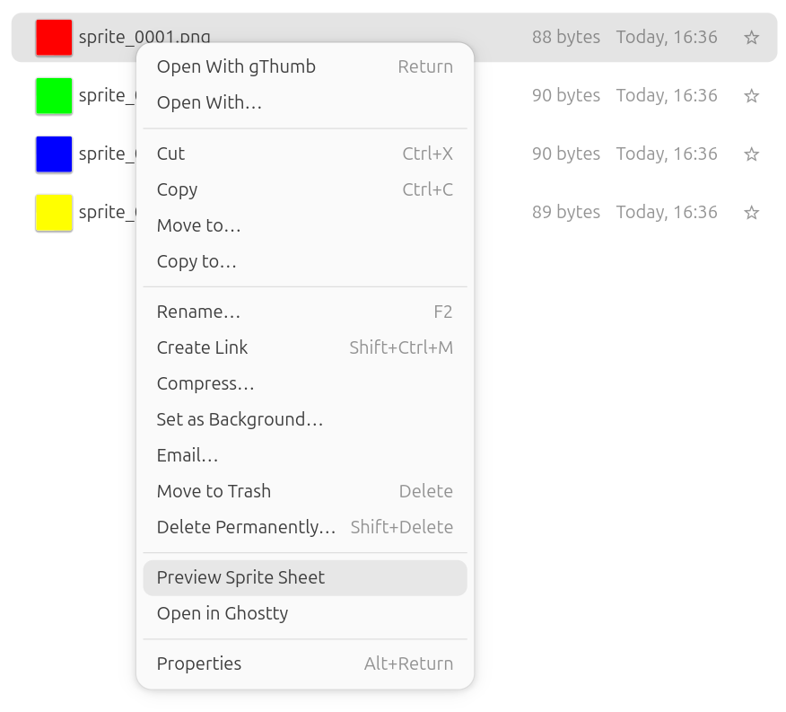
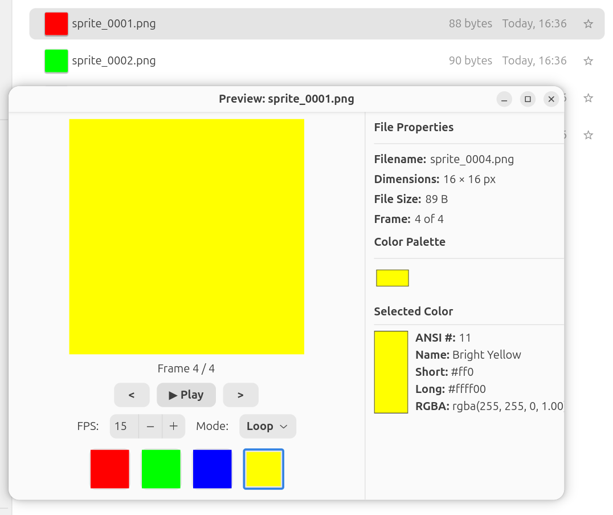

Modern GNOME Files Python extension for Ubuntu 26.04 LTS ("resolute") to preview pixel art, image assets, and animated sprite sequences instantly.


Perfect for pixel art! Small PNG, GIF, BMP, and WebP images are scaled using crisp, sharp point filtering to preserve individual pixels instead of showing blurry, smooth artifacts.
A dedicated sidebar displays metadata properties such as filename, original dimensions, file size, and the number of active animation frames.
Instantly extracts the top 16 most common colors in the active frame. Swatch widgets are recycled dynamically to preserve tooltips even while sprite animations are playing.
Clicking any palette swatch reveals details in the sidebar showing its exact closest ANSI 256 color name/index, hex format (with transparency if present), and full RGBA values.
Provides complete animation controls (Play, Pause, Step Next, Step Prev) and clickable thumbnail strips for standard sprite sequences AND custom multi-file selections.
Configure defaults on the fly via a standalone Settings window: set a default FPS, toggle "Remember FPS" per sheet/directory, and select default loop modes.
First, ensure you have the Python 3 bindings for Nautilus components installed on your system:
Execute this command to download the extension, copy it to the local extensions directory, and automatically restart Nautilus to load the plugin: